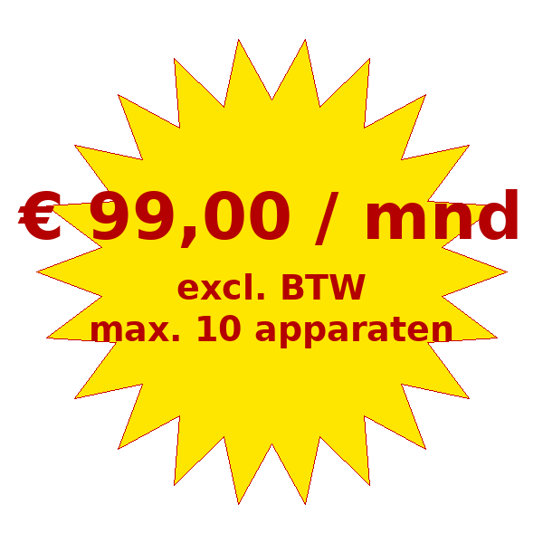

Maak inruilen eenvoudig, snel en transparant
Binnen 30 seconden een eerlijke, marktconforme inruilwaarde – professioneel en consistent.
Calculator licentie aanvragen

Binnen 30 seconden een eerlijke, marktconforme inruilwaarde – professioneel en consistent.
Calculator licentie aanvragenVeel klanten willen hun oude fiets inruilen, maar het bepalen van een eerlijke en snelle inruilprijs kost vaak tijd en discussie. Met de Fiets Inruil Calculator heb je direct een professioneel en transparant hulpmiddel in handen.
Laat klanten direct zien wat hun fiets waard is en maak het verkoopproces sneller, makkelijker en professioneler.